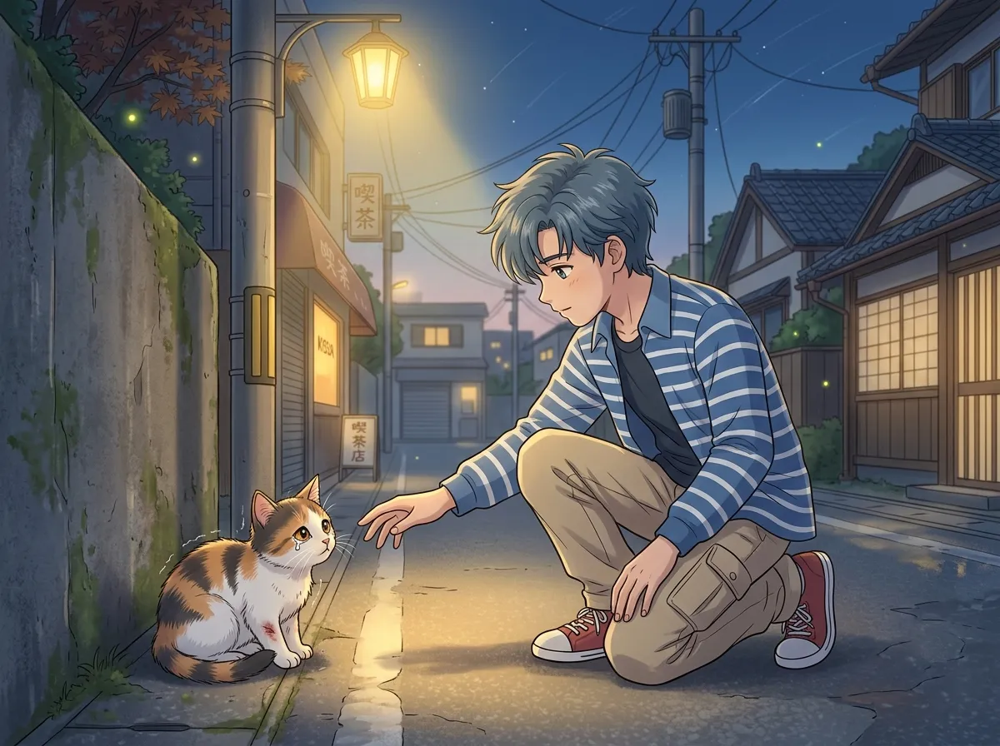
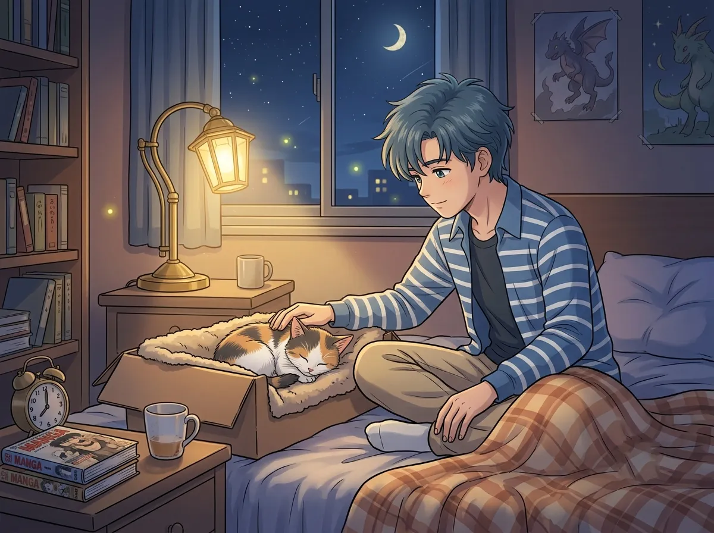
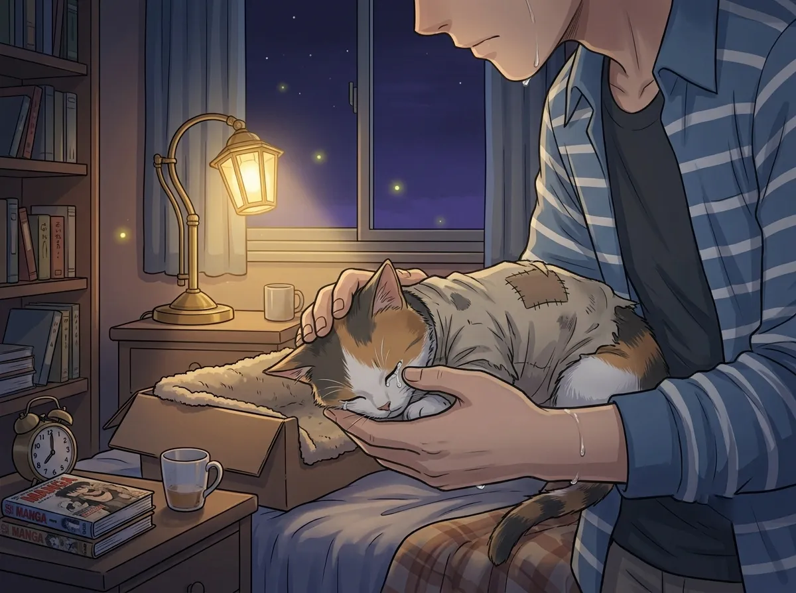
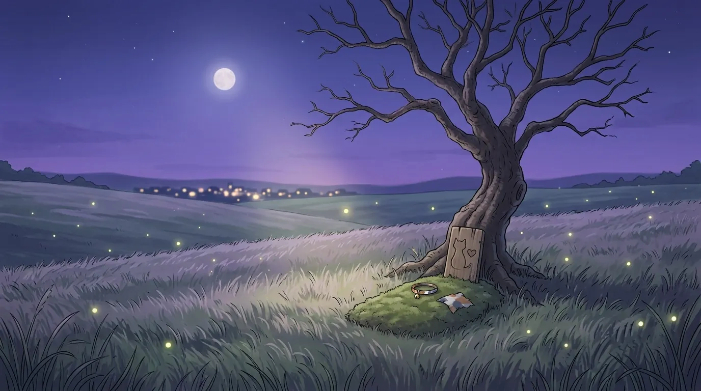
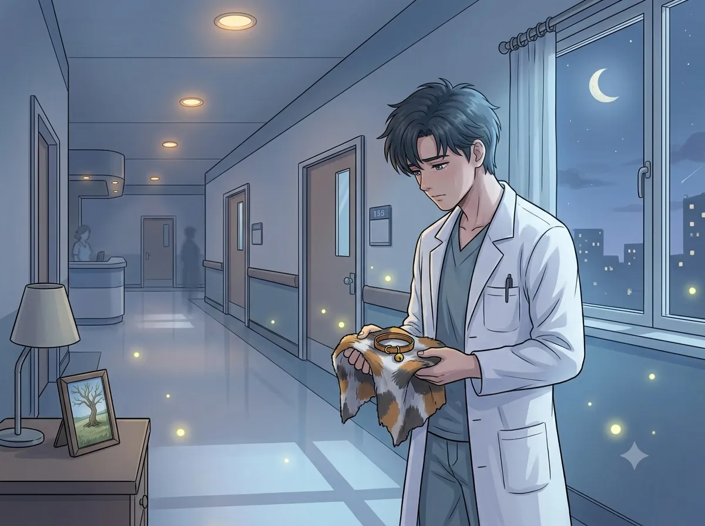

He was a doctor. He couldn't save it. He never tried again.
He was a doctor. He saved people. He had always saved people. That was his purpose. That was his identity. That was the only thing he knew how to do.
But before he was a doctor, before he saved people, he tried to save something else. Something small. Something helpless. Something that needed him.
It was a cat. A small cat. Injured. Alone. Dying.
He tried to save it. He did everything he could. He brought it home. He cleaned its wounds. He wrapped its leg. He stayed up all night watching it breathe.
It died anyway.
He never talked about it. He never told anyone. He never tried to save anything that couldn't speak for itself again.
This is the story of that cat.

He found it on the street. A small cat. A small, dirty, injured cat. Its leg was bent at an angle that legs should not bend at. It was bleeding. It was shaking. It was looking at him.
He didn't know why he stopped. He didn't know why he knelt down. He didn't know why he reached out his hand. He didn't know why he picked it up.
He just did. He couldn't leave it there. He couldn't leave it alone. He couldn't leave it to die in the street like it didn't matter.
He brought it home. He cleaned its wounds. He wrapped its leg. He gave it water. He gave it food. He gave it a warm place to sleep.
He didn't know why he did all of that. He didn't know why he cared. He only knew that he couldn't stop. He only knew that he had to try.
He didn't know why he stopped. He didn't know why he couldn't walk past it. He didn't know why he couldn't leave it there.
He was not a vet. He was not trained. He was just a person who saw something hurt and couldn't walk away.
He didn't know that the first thing he ever tried to save would be the first thing he couldn't.

He stayed up all night. He sat next to the cat. He watched it breathe. He watched its chest rise and fall. He watched its eyes close and open. He watched its body struggle to stay alive.
He didn't sleep. He didn't eat. He didn't move. He just watched. He just waited. He just hoped.
He talked to it. He doesn't remember what he said. He only remembers that he talked. He told it that it would be okay. He told it that he was there. He told it that it didn't have to be alone.
He didn't know if the cat could understand. He didn't care. He needed to say it. He needed to believe it. He needed to hope.
The cat breathed. The cat breathed all night. The cat breathed until the morning.
And then it stopped.
He stayed up all night. He watched it breathe. He watched its chest rise and fall. He watched its eyes close and open. He watched its body struggle to stay alive.
He didn't sleep. He didn't eat. He didn't move. He just watched. He just waited. He just hoped.
He didn't know that it would be the last time. He didn't know that the breathing would stop. He didn't know that the hope would end.
He stayed up all night. He watched it breathe. And then it stopped.

The cat stopped breathing. The cat stopped breathing and he didn't move. He didn't speak. He didn't cry. He just sat there. Looking at it. Holding it. Waiting for it to start again.
It didn't start again. It didn't start breathing. It didn't open its eyes. It didn't move. It was gone. It was gone and he was still there.
He didn't know what to do. He didn't know what to do with the body. He didn't know what to do with the silence. He didn't know what to do with the failure.
He had never failed before. He had never tried to save something and failed. He had never tried and lost.
He didn't know how to fail. He didn't know how to lose. He didn't know how to be the person who tried and failed.
He had never failed before. He had never tried to save something and failed. He had never tried and lost.
He didn't know how to fail. He didn't know how to lose. He didn't know how to be the person who tried and failed.
He didn't know that failure was part of saving things. He didn't know that you couldn't save everything. He didn't know that some things are too broken to fix.
He knows now. He has known for a long time. But he still hasn't learned how to accept it.

He buried it under a tree. A small tree. A tree near the hospital. A tree where no one would find it. A tree where he could visit it if he wanted to.
He never visited it. He never went back. He never saw the tree again. He never saw the spot where he buried the cat. He never saw the place where he said goodbye.
He doesn't know why he never went back. He doesn't know if he was afraid. He doesn't know if he was sad. He only knows that he couldn't.
The tree is still there. The cat is still there. He is still here. And he still hasn't gone back.
He never went back to the tree. He doesn't know why. He doesn't know if he was afraid. He doesn't know if he was sad. He only knows that he couldn't.
He has been back to every place he has ever been. He has returned to every place that mattered. He has never returned to that tree.
Because that tree is the place where he learned that he couldn't save everything. That tree is the place where he learned that failure was possible. That tree is the place where he learned that he was not invincible.
He doesn't know if he can face that. He doesn't know if he can face the tree and the cat and the failure. He doesn't know if he can face the person he was that day.

He saves people now. Every day. He saves lives. He fixes things. He does what he couldn't do for the cat.
He never forgot the cat. He never forgot the feeling of holding it as it died. He never forgot the feeling of failure. He never forgot the feeling of not being enough.
He saves people now. Every day. He doesn't know if he saves them because he can. He doesn't know if he saves them because he has to. He doesn't know if he saves them because he is still trying to save the cat.
He never told anyone about the cat. He never told anyone about the failure. He never told anyone about the tree. He never told anyone about the night he stayed awake and watched something die.
He saves people. Every day. He never stopped trying. He never stopped hoping. He never stopped being the person who tried to save the cat.
He couldn't save the cat. He tried. He failed. He learned that failure was possible. He learned that he was not invincible. He learned that he could try and still lose.
He saves people now. Every day. He saves people because he can. He saves people because he has to. He saves people because he is still trying to save the cat.
He never told anyone about the cat. He never told anyone about the failure. He never told anyone about the tree. He never told anyone about the night he stayed awake and watched something die.
He saves people. He never stopped trying. He never stopped hoping. He never stopped being the person who tried to save the cat.
Zayne found a cat. He tried to save it. He failed. He buried it under a tree. He never went back. He never told anyone.
He saves people now. Every day. He saves people because he can. He saves people because he has to. He saves people because he is still trying to save the cat.
He never forgot the cat. He never forgot the failure. He never forgot the night he stayed awake and watched something die.
He never stopped trying. He never stopped hoping. He never stopped being the person who tried to save the cat.
He never told anyone about the cat. He never told anyone about the tree. He never told anyone about the night he stayed awake and watched something die.
He saves people now. Every day. He doesn't know if he saves them because he can. He doesn't know if he saves them because he has to. He doesn't know if he saves them because he is still trying to save the cat.